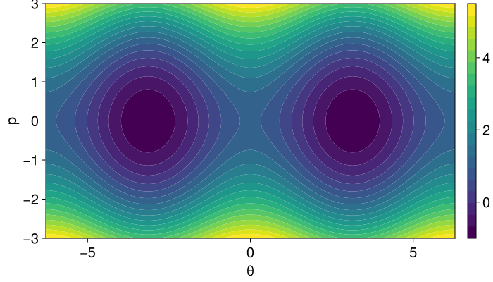
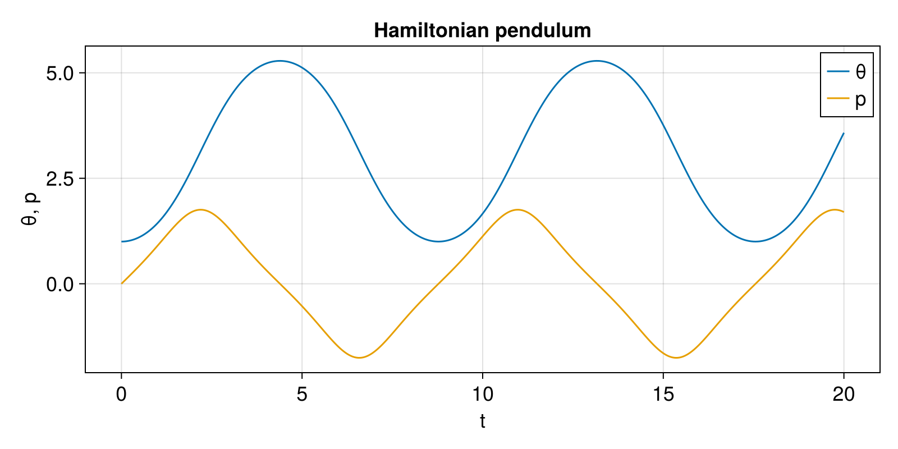
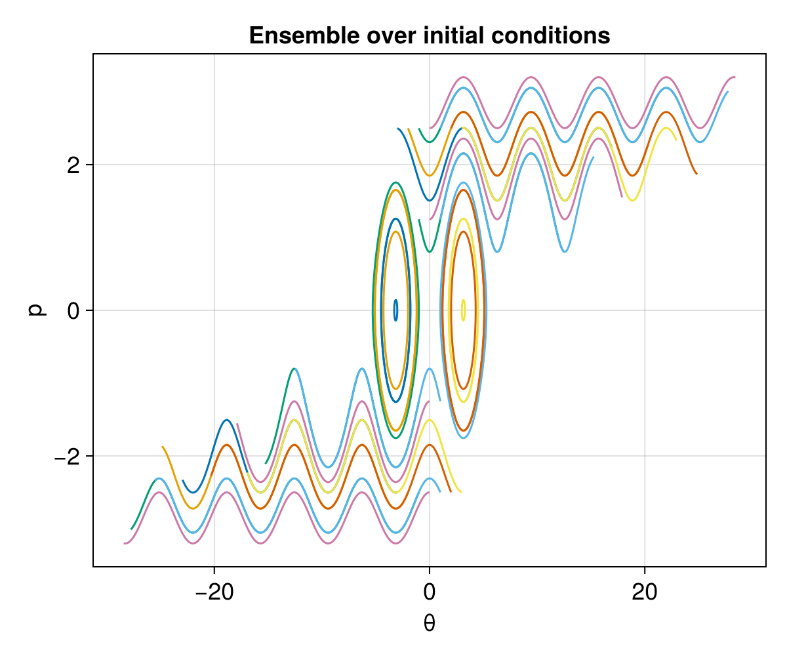
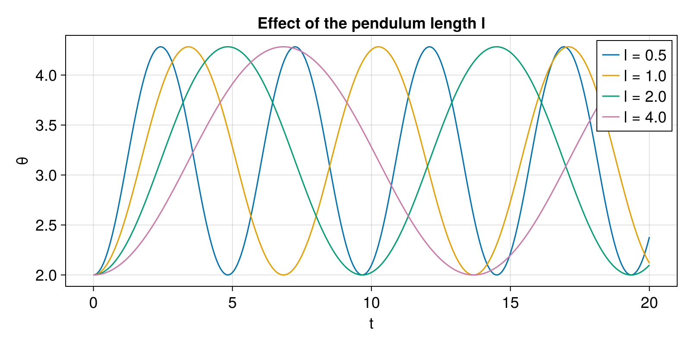

Mathematical Pendulum
The mathematical pendulum consists of a point mass $m$ attached to the origin $(x,y) = (0,0)$ by a massless rod of length $l$. All motion is assumed to be frictionless and confined to a plane, and the pendulum moves in a homogeneous gravitational field of strength $g$.
The configuration of the system is described by a single angle $\theta$, measured from the upward vertical, in terms of which the cartesian coordinates of the mass are
\[x = l \sin\theta , \qquad y = l \cos\theta .\]
The Lagrangian is the difference of the kinetic energy $T = \tfrac{1}{2} m l^2 \dot\theta^2$ and the potential energy $V = m g y = m g l \cos\theta$,
\[L (\theta, \dot\theta) = \frac{1}{2} m l^2 \dot\theta^2 - m g l \cos\theta .\]
The canonical conjugate momentum is obtained from the Lagrangian as
\[p = \frac{\partial L}{\partial \dot\theta} = m l^2 \dot\theta ,\]
so that the Hamiltonian, obtained via the Legendre transform $H = \dot\theta \, p - L$, reads
\[H (\theta, p) = \frac{p^2}{2 m l^2} + m g l \cos\theta .\]
Hamilton's equations of motion are therefore
\[\dot\theta = \frac{\partial H}{\partial p} = \frac{p}{m l^2} , \qquad \dot p = - \frac{\partial H}{\partial \theta} = m g l \sin\theta ,\]
which are equivalent to the familiar second-order form
\[\ddot\theta = \frac{g}{l} \sin\theta .\]
The default parameters $l = m = g = 1$ reduce the Hamiltonian to the normalised form $H(\theta, p) = \tfrac{1}{2} p^2 + \cos\theta$. Note that, with this sign convention, $\theta = 0$ (the upright position) is an unstable equilibrium, whereas $\theta = \pi$ (the mass hanging straight down) is stable.
The phase-space portrait of the Hamiltonian, with its characteristic separatrix between the librating (oscillating) and rotating regimes, is shown below.

Hamiltonian dynamics
The canonical Hamiltonian dynamics is provided by hodeproblem, which can be integrated with any of the integrators from GeometricIntegrators.
using GeometricProblems.Pendulum
using GeometricIntegrators
using CairoMakie
prob = hodeproblem([1.0], [0.0]; timespan = (0.0, 20.0), timestep = 0.05)
sol = integrate(prob, ImplicitMidpoint())
t = [sol.t[n] for n in axes(sol.q, 1)]
θ = [sol.q[n][1] for n in axes(sol.q, 1)]
p = [sol.p[n][1] for n in axes(sol.q, 1)]
fig = Figure(size = (800, 400), fontsize = 18)
ax = Axis(fig[1, 1], xlabel = "t", ylabel = "θ, p", title = "Hamiltonian pendulum")
lines!(ax, t, θ, label = "θ")
lines!(ax, t, p, label = "p")
axislegend(ax)
fig
Ensembles
The function hodeensemble constructs an HODEEnsemble holding many instances of the problem at once. In its default form it samples a grid of initial conditions over given bounds in $(\theta, p)$, sharing a single set of parameters. Integrating the ensemble and plotting all trajectories in phase space reproduces the portrait above:
ens = hodeensemble([-3.0], [3.0], [-2.5], [2.5], [7], [5]; timespan = (0.0, 10.0), timestep = 0.05)
sols = integrate(ens, ImplicitMidpoint())
fig = Figure(size = (600, 500), fontsize = 18)
ax = Axis(fig[1, 1], xlabel = "θ", ylabel = "p", title = "Ensemble over initial conditions")
for i in 1:length(sols)
lines!(ax,
[sols[i].q[n][1] for n in axes(sols[i].q, 1)],
[sols[i].p[n][1] for n in axes(sols[i].q, 1)])
end
fig
The pendulum length $l$ (as well as the mass $m$ and the gravitational acceleration $g$) is a parameter of the problem. A second method of hodeensemble takes a single initial condition together with a vector of parameter sets, which is convenient for studying how the dynamics depends on the parameters. Here we fix the initial condition and vary the length $l$, which changes the oscillation period $\propto \sqrt{l / g}$:
lengths = [0.5, 1.0, 2.0, 4.0]
params = [(l = L, m = 1.0, g = 1.0) for L in lengths]
ens = hodeensemble([2.0], [0.0], params; timespan = (0.0, 20.0), timestep = 0.05)
sols = integrate(ens, ImplicitMidpoint())
fig = Figure(size = (800, 400), fontsize = 18)
ax = Axis(fig[1, 1], xlabel = "t", ylabel = "θ", title = "Effect of the pendulum length l")
for i in 1:length(sols)
lines!(ax,
[sols[i].t[n] for n in axes(sols[i].q, 1)],
[sols[i].q[n][1] for n in axes(sols[i].q, 1)];
label = "l = $(lengths[i])")
end
axislegend(ax)
fig
Library functions
GeometricProblems.Pendulum — Module
Mathematical Pendulum
The mathematical pendulum with Hamiltonian
\[H(q, p) = \frac{p^2}{2 m l^2} + m g l \cos(q) ,\]
where q is the angle and p the conjugate momentum.
System parameters:
l: length of the pendulumm: mass of the pendulumg: gravitational acceleration
The default parameters l = m = g = 1 reduce this to the normalised Hamiltonian $H(q, p) = p^2 / 2 + \cos(q)$.